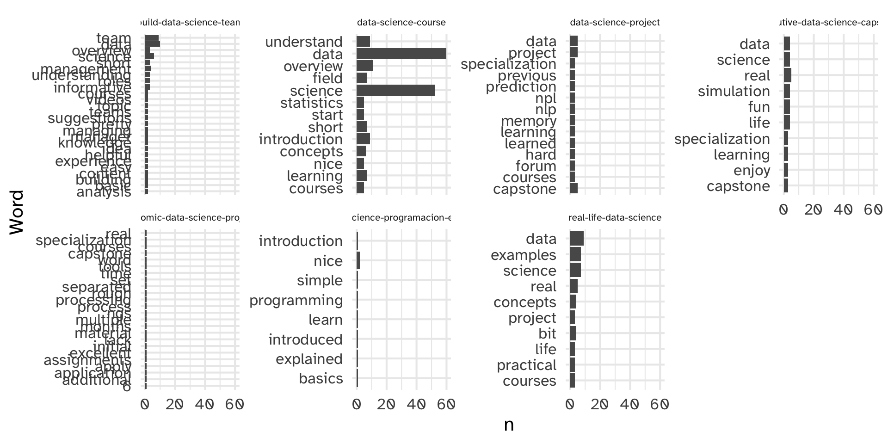
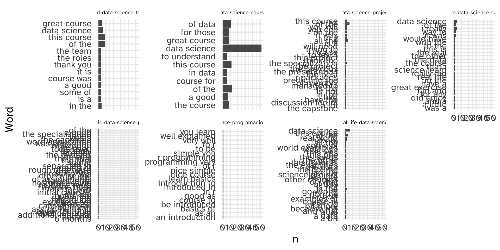
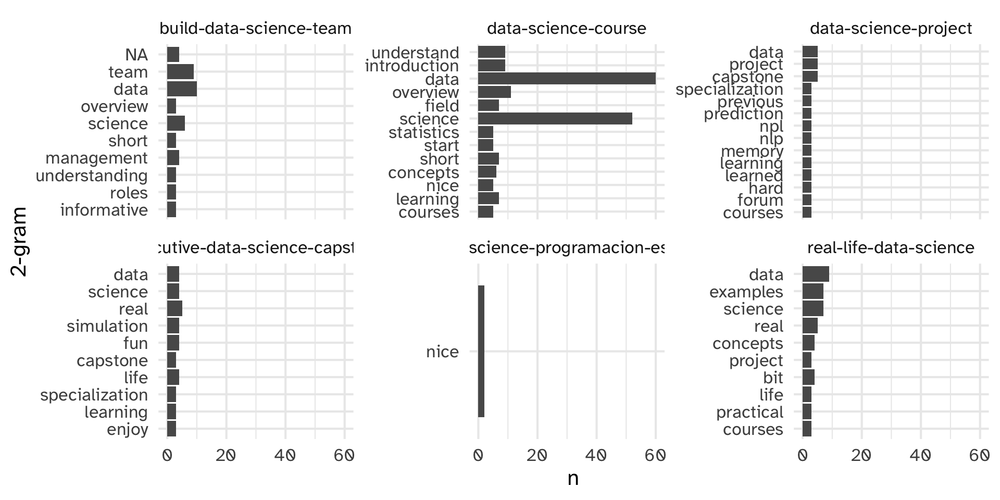
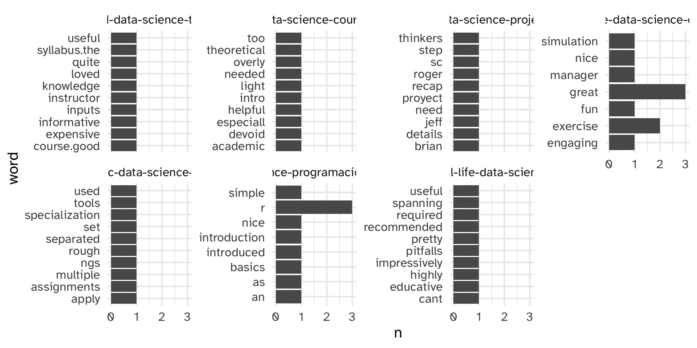

Text Analysis
Day 14
Carleton College
Stat 220 - Winter 2026
Today
- Midterm check-in
- Portfolio 2
- Regex
- Intro to Text Analysis
Midterm check-in
Things that are going well:
- Like getting immediate practice in class
- Learning a lot on homeworks
- Becoming more efficient/neater/cleaner/cleverer in R
- Building a presence on GitHub
- Working with peers
- Building confidence
-
ggplotskills - Enjoying coming to class (demos, lectures, group work, activities)
Overview of responses
[graphs from google]
Suggested changes:
- Grades for in-class activities ✅
- More time for in-class lab quizzes ﹖
- Lab quiz revisions after grading ❌
Concerns about grading scheme:
- Time pressures on lab quizzes
- Still getting comfy with the “buckets” grading scheme
- Unclear mistakes on homework
Goals of the grading scheme:
Homework
- Can you apply techniques from class/readings in new settings?
- Can you read R documentation to figure out new things?
- Can you work through some tricky ideas without a time limit?
Portfolio Projects
- Can you answer less-structured questions with data?
- Are you learning how to “scope” a data analysis?
- Can you put together a polished final product?
Lab Quizzes
- Can you repeat things we have done in class and on homework with limited access to resources?
- Are you learning how to answer questions with data quickly?
- Are you developing proficiency with R?
Revision is a key part of this course design!
Portfolio Project 2
Regular Expressions (regex)
Example
Suppose we wish to anonymize phone numbers in survey results
[1] "Home: 507-645-5489" "Cell: 219.917.9871"
[3] "My work phone is 507-202-2332" "I don't have a phone" Visualizing matches
The helper function str_view() finds regex matches
. match any character
Find a “-” and any (.) character that follows
[] match any occurence
Find any numbers between 0 and 9
[] match any occurence
Find any numbers between 2 and 7
Your turn:
Detect either “.” or “-” in the info vector.
02:00
Special patterns
There are a number of special patterns that match more than one character
-
\\d- digit -
\\s- white space -
\\w- word -
\\t- tab -
\\n- newline
Caution!
[^] match any occurence except
ANYTHING BUT numbers between 2 and 7
Anchors
Anchors look for matches at the start ^ or end $
[1] │ Home: 507-645-5489
[2] │ Cell: 219.917.9871
[3] │ My work phone is 507-202-2332
[4] │ I don't have a phoneUse regex in str_detect, str_sub, etc:
[1] │ Home: 507-645-5489
[2] │ Cell: 219.917.9871
[3] │ My work phone is 507-202-2332
[4] │ I don't have a phoneYour turn
A vector called words is loaded with stringr and contains a corpus of 980 words used in text analysis. Use stringr functions and regular expressions to find the words that satisfy the following descriptions.
1. Find all words that start with y.
2. Find all words that end with x.
3. Find all words that start with a vowel.
4. Find all words that start with consonants.
04:00
Alternative patterns
| allows you to match one or more alternative patterns
“Fixing” the order of operations
Why are these different?
Repetition
You can search for a pattern followed by the number of matches
Your turn:
Find all words that are exactly three letters long.
Find all words that end with ing or ise.
Find all words that have seven letters or more.
Find all words that start with three consonants.
02:30
Duplicating groups
Use escaped numbers (\\1, \\2, etc) to repeat a group based on position
Which numbers have the same 1st and 3rd digits?
Intro to Text Analysis
Text Analysis
Up to this point, we’ve been thinking of string data as a column in our dataset:
- Names
- Phone numbers
- Addresses
- Course titles
- etc.
which are all relatively short and structured. We can extract meaning from them using relatively simple functions.
Sometimes, text data is more unstructured
Random (?) sample of 26,882 reviews of coursera courses
# A tibble: 26,882 × 5
CourseId Review Label cld2 review_id
<chr> <chr> <dbl> <chr> <dbl>
1 nurture-market-strategies It would be better if the … 1 en 1
2 nand2tetris2 Superb course. Great prese… 5 en 2
3 schedule-projects Excellent course! 5 en 3
4 teaching-english-capstone-2 I'd recommend this course … 5 en 4
5 machine-learning This course was so effecti… 5 en 5
6 python-network-data Words cannot describe how … 5 en 6
7 clinical-trials Great course! 5 en 7
8 python-genomics I didn't know anything abo… 3 en 8
9 strategic-management Loved everything about thi… 5 en 9
10 script-writing No significant instruction… 1 en 10
# ℹ 26,872 more rowsNote: may need to install tidytext and stopwords packages
Sometimes, text data is more unstructured
[1] "So first of all, the material for this course in the bookdown document are very good - well structured, with good sources. My concern is that the Coursera course does not go a lot beyond, basically just referring to the document and adding quizzes + graded assignment in the last week. The assignment, however, is nice and challenging and requires people to understand the materials.Also, the course covers other great packages than ggplot2, e.g. plotly and leaflet and methods for handling spatial data. I think it would be very nice if the students were challenged in these topics as well and evaluate them in a better way than just a quiz (programming assignment for instance).I liked the course though and I believe it can be prepared even better."
[2] "Good course on plotting libraries and useful plots in R. Wished there was more coverage of ggplot and less on lattice, but overall a useful course."
[3] "Good Intro to R.Basics of ggplot2 should have been covered along with base graphs or as a separate unit"
[4] "Interesting, information-dense and well presented lectures by someone who obviously has a deep understanding of the topics and who is passionate about teaching the subject. Added to that: a great course textbook and useful R tutorials with a focus on commonly used libraries such as dplyr and ggplot. Beginner and intermediate statistics students, as well as teachers interested in the presentation of statistics theory and practice, can't go wrong with this course."
[5] "ggplot2 module was extremely helpful"
[6] "This course provides a great overiew to introductory R programming. Since taking the course, I have successfully used the precepts learned here for a number of analysis projects. Coupled with ggplot2 graphics, the results became self-evident."
[7] "Lecture videos were fantastic! Instructor was amazing. I have a big problem with the final project in Week 5. The entire courses was focused on statistics, yet the final project was focused on R. I wish I had prior R knowledge before starting this course, yet on the front page it says it's a beginner specialization. I would recommend learning R and ggplot before this course. It will make the course a lot less frustrating!"
[8] "Overall, I would recommend this class. I found that the preparation towards the final project could use some improvement, especially plotting using the 'ggplot2' package. Why not work on this during Week 4 through an assignment that works on this? This would have made it easier to focus on the research questions of the project and less on the graph making mechanics. Also, I found that the project was a little bit too open-ended and could have used some more input from the instructors' side. The material during the four weeks of the course was really good and thorough but perhaps a little too difficult to follow for people who have absolutely no background in probability theory. Maybe one should audit the course first and then decide whether it would be a good idea to formally enroll."
Some notation
document: an observation of text data (in this case, an abstract)
corpus: collection of many documents
token: a unit of analysis within the document (typically a word, but could be a sentence or a line or a pair of words, etc.)
Text as tidy data
-
tokenize each document
- Each row in the dataset is a token
- Remove stopwords
- Words like “the” and “is” typically aren’t interesting
- Makes the dataset smaller and easier to work with
- Count the tokens
- (optional) fancy count the tokens
- Standardize based on total number of tokens
- How common is a token relative to other documents
- How common are “good words” or “bad words”
unnest_tokens()
-
tbl: our data -
output: what should the output column be called? -
input: what column do we tokenize? -
token: default is “word” but can also be “ngrams”, “sentences”, “lines”, “paragraphs”, etc. -
to_lower: should tokens be converted to lowercase
Tokenize
# A tibble: 666,493 × 2
CourseId word
<chr> <chr>
1 nurture-market-strategies it
2 nurture-market-strategies would
3 nurture-market-strategies be
4 nurture-market-strategies better
5 nurture-market-strategies if
6 nurture-market-strategies the
7 nurture-market-strategies instructors
8 nurture-market-strategies cared
9 nurture-market-strategies to
10 nurture-market-strategies respond
# ℹ 666,483 more rowsStopwords
[1] "'ll" "'tis" "'twas" "'ve"
[5] "10" "39" "a" "a's"
[9] "able" "ableabout" "about" "above"
[13] "abroad" "abst" "accordance" "according"
[17] "accordingly" "across" "act" "actually"
[21] "ad" "added" "adj" "adopted"
[25] "ae" "af" "affected" "affecting"
[29] "affects" "after" "afterwards" "ag"
[33] "again" "against" "ago" "ah"
[37] "ahead" "ai" "ain't" "aint"
[41] "al" "all" "allow" "allows"
[45] "almost" "alone" "along" "alongside"
[49] "already" "also" "although" "always"
[53] "am" "amid" "amidst" "among"
[57] "amongst" "amoungst" "amount" "an"
[61] "and" "announce" "another" "any"
[65] "anybody" "anyhow" "anymore" "anyone"
[69] "anything" "anyway" "anyways" "anywhere"
[73] "ao" "apart" "apparently" "appear"
[77] "appreciate" "appropriate" "approximately" "aq"
[81] "ar" "are" "area" "areas"
[85] "aren" "aren't" "arent" "arise"
[89] "around" "arpa" "as" "aside"
[93] "ask" "asked" "asking" "asks"
[97] "associated" "at" "au" "auth"
[101] "available" "aw" "away" "awfully"
[105] "az" "b" "ba" "back"
[109] "backed" "backing" "backs" "backward"
[113] "backwards" "bb" "bd" "be"
[117] "became" "because" "become" "becomes"
[121] "becoming" "been" "before" "beforehand"
[125] "began" "begin" "beginning" "beginnings"
[129] "begins" "behind" "being" "beings"
[133] "believe" "below" "beside" "besides"
[137] "best" "better" "between" "beyond"
[141] "bf" "bg" "bh" "bi"
[145] "big" "bill" "billion" "biol"
[149] "bj" "bm" "bn" "bo"
[153] "both" "bottom" "br" "brief"
[157] "briefly" "bs" "bt" "but"
[161] "buy" "bv" "bw" "by"
[165] "bz" "c" "c'mon" "c's"
[169] "ca" "call" "came" "can"
[173] "can't" "cannot" "cant" "caption"
[177] "case" "cases" "cause" "causes"
[181] "cc" "cd" "certain" "certainly"
[185] "cf" "cg" "ch" "changes"
[189] "ci" "ck" "cl" "clear"
[193] "clearly" "click" "cm" "cmon"
[197] "cn" "co" "co." "com"
[201] "come" "comes" "computer" "con"
[205] "concerning" "consequently" "consider" "considering"
[209] "contain" "containing" "contains" "copy"
[213] "corresponding" "could" "could've" "couldn"
[217] "couldn't" "couldnt" "course" "cr"
[221] "cry" "cs" "cu" "currently"
[225] "cv" "cx" "cy" "cz"
[229] "d" "dare" "daren't" "darent"
[233] "date" "de" "dear" "definitely"
[237] "describe" "described" "despite" "detail"
[241] "did" "didn" "didn't" "didnt"
[245] "differ" "different" "differently" "directly"
[249] "dj" "dk" "dm" "do"
[253] "does" "doesn" "doesn't" "doesnt"
[257] "doing" "don" "don't" "done"
[261] "dont" "doubtful" "down" "downed"
[265] "downing" "downs" "downwards" "due"
[269] "during" "dz" "e" "each"
[273] "early" "ec" "ed" "edu"
[277] "ee" "effect" "eg" "eh"
[281] "eight" "eighty" "either" "eleven"
[285] "else" "elsewhere" "empty" "end"
[289] "ended" "ending" "ends" "enough"
[293] "entirely" "er" "es" "especially"
[297] "et" "et-al" "etc" "even"
[301] "evenly" "ever" "evermore" "every"
[305] "everybody" "everyone" "everything" "everywhere"
[309] "ex" "exactly" "example" "except"
[313] "f" "face" "faces" "fact"
[317] "facts" "fairly" "far" "farther"
[321] "felt" "few" "fewer" "ff"
[325] "fi" "fifteen" "fifth" "fifty"
[329] "fify" "fill" "find" "finds"
[333] "fire" "first" "five" "fix"
[337] "fj" "fk" "fm" "fo"
[341] "followed" "following" "follows" "for"
[345] "forever" "former" "formerly" "forth"
[349] "forty" "forward" "found" "four"
[353] "fr" "free" "from" "front"
[357] "full" "fully" "further" "furthered"
[361] "furthering" "furthermore" "furthers" "fx"
[365] "g" "ga" "gave" "gb"
[369] "gd" "ge" "general" "generally"
[373] "get" "gets" "getting" "gf"
[377] "gg" "gh" "gi" "give"
[381] "given" "gives" "giving" "gl"
[385] "gm" "gmt" "gn" "go"
[389] "goes" "going" "gone" "good"
[393] "goods" "got" "gotten" "gov"
[397] "gp" "gq" "gr" "great"
[401] "greater" "greatest" "greetings" "group"
[405] "grouped" "grouping" "groups" "gs"
[409] "gt" "gu" "gw" "gy"
[413] "h" "had" "hadn't" "hadnt"
[417] "half" "happens" "hardly" "has"
[421] "hasn" "hasn't" "hasnt" "have"
[425] "haven" "haven't" "havent" "having"
[429] "he" "he'd" "he'll" "he's"
[433] "hed" "hell" "hello" "help"
[437] "hence" "her" "here" "here's"
[441] "hereafter" "hereby" "herein" "heres"
[445] "hereupon" "hers" "herself" "herse”"
[449] "hes" "hi" "hid" "high"
[453] "higher" "highest" "him" "himself"
[457] "himse”" "his" "hither" "hk"
[461] "hm" "hn" "home" "homepage"
[465] "hopefully" "how" "how'd" "how'll"
[469] "how's" "howbeit" "however" "hr"
[473] "ht" "htm" "html" "http"
[477] "hu" "hundred" "i" "i'd"
[481] "i'll" "i'm" "i've" "i.e."
[485] "id" "ie" "if" "ignored"
[489] "ii" "il" "ill" "im"
[493] "immediate" "immediately" "importance" "important"
[497] "in" "inasmuch" "inc" "inc."
[501] "indeed" "index" "indicate" "indicated"
[505] "indicates" "information" "inner" "inside"
[509] "insofar" "instead" "int" "interest"
[513] "interested" "interesting" "interests" "into"
[517] "invention" "inward" "io" "iq"
[521] "ir" "is" "isn" "isn't"
[525] "isnt" "it" "it'd" "it'll"
[529] "it's" "itd" "itll" "its"
[533] "itself" "itse”" "ive" "j"
[537] "je" "jm" "jo" "join"
[541] "jp" "just" "k" "ke"
[545] "keep" "keeps" "kept" "keys"
[549] "kg" "kh" "ki" "kind"
[553] "km" "kn" "knew" "know"
[557] "known" "knows" "kp" "kr"
[561] "kw" "ky" "kz" "l"
[565] "la" "large" "largely" "last"
[569] "lately" "later" "latest" "latter"
[573] "latterly" "lb" "lc" "least"
[577] "length" "less" "lest" "let"
[581] "let's" "lets" "li" "like"
[585] "liked" "likely" "likewise" "line"
[589] "little" "lk" "ll" "long"
[593] "longer" "longest" "look" "looking"
[597] "looks" "low" "lower" "lr"
[601] "ls" "lt" "ltd" "lu"
[605] "lv" "ly" "m" "ma"
[609] "made" "mainly" "make" "makes"
[613] "making" "man" "many" "may"
[617] "maybe" "mayn't" "maynt" "mc"
[621] "md" "me" "mean" "means"
[625] "meantime" "meanwhile" "member" "members"
[629] "men" "merely" "mg" "mh"
[633] "microsoft" "might" "might've" "mightn't"
[637] "mightnt" "mil" "mill" "million"
[641] "mine" "minus" "miss" "mk"
[645] "ml" "mm" "mn" "mo"
[649] "more" "moreover" "most" "mostly"
[653] "move" "mp" "mq" "mr"
[657] "mrs" "ms" "msie" "mt"
[661] "mu" "much" "mug" "must"
[665] "must've" "mustn't" "mustnt" "mv"
[669] "mw" "mx" "my" "myself"
[673] "myse”" "mz" "n" "na"
[677] "name" "namely" "nay" "nc"
[681] "nd" "ne" "near" "nearly"
[685] "necessarily" "necessary" "need" "needed"
[689] "needing" "needn't" "neednt" "needs"
[693] "neither" "net" "netscape" "never"
[697] "neverf" "neverless" "nevertheless" "new"
[701] "newer" "newest" "next" "nf"
[705] "ng" "ni" "nine" "ninety"
[709] "nl" "no" "no-one" "nobody"
[713] "non" "none" "nonetheless" "noone"
[717] "nor" "normally" "nos" "not"
[721] "noted" "nothing" "notwithstanding" "novel"
[725] "now" "nowhere" "np" "nr"
[729] "nu" "null" "number" "numbers"
[733] "nz" "o" "obtain" "obtained"
[737] "obviously" "of" "off" "often"
[741] "oh" "ok" "okay" "old"
[745] "older" "oldest" "om" "omitted"
[749] "on" "once" "one" "one's"
[753] "ones" "only" "onto" "open"
[757] "opened" "opening" "opens" "opposite"
[761] "or" "ord" "order" "ordered"
[765] "ordering" "orders" "org" "other"
[769] "others" "otherwise" "ought" "oughtn't"
[773] "oughtnt" "our" "ours" "ourselves"
[777] "out" "outside" "over" "overall"
[781] "owing" "own" "p" "pa"
[785] "page" "pages" "part" "parted"
[789] "particular" "particularly" "parting" "parts"
[793] "past" "pe" "per" "perhaps"
[797] "pf" "pg" "ph" "pk"
[801] "pl" "place" "placed" "places"
[805] "please" "plus" "pm" "pmid"
[809] "pn" "point" "pointed" "pointing"
[813] "points" "poorly" "possible" "possibly"
[817] "potentially" "pp" "pr" "predominantly"
[821] "present" "presented" "presenting" "presents"
[825] "presumably" "previously" "primarily" "probably"
[829] "problem" "problems" "promptly" "proud"
[833] "provided" "provides" "pt" "put"
[837] "puts" "pw" "py" "q"
[841] "qa" "que" "quickly" "quite"
[845] "qv" "r" "ran" "rather"
[849] "rd" "re" "readily" "really"
[853] "reasonably" "recent" "recently" "ref"
[857] "refs" "regarding" "regardless" "regards"
[861] "related" "relatively" "research" "reserved"
[865] "respectively" "resulted" "resulting" "results"
[869] "right" "ring" "ro" "room"
[873] "rooms" "round" "ru" "run"
[877] "rw" "s" "sa" "said"
[881] "same" "saw" "say" "saying"
[885] "says" "sb" "sc" "sd"
[889] "se" "sec" "second" "secondly"
[893] "seconds" "section" "see" "seeing"
[897] "seem" "seemed" "seeming" "seems"
[901] "seen" "sees" "self" "selves"
[905] "sensible" "sent" "serious" "seriously"
[909] "seven" "seventy" "several" "sg"
[913] "sh" "shall" "shan't" "shant"
[917] "she" "she'd" "she'll" "she's"
[921] "shed" "shell" "shes" "should"
[925] "should've" "shouldn" "shouldn't" "shouldnt"
[929] "show" "showed" "showing" "shown"
[933] "showns" "shows" "si" "side"
[937] "sides" "significant" "significantly" "similar"
[941] "similarly" "since" "sincere" "site"
[945] "six" "sixty" "sj" "sk"
[949] "sl" "slightly" "sm" "small"
[953] "smaller" "smallest" "sn" "so"
[957] "some" "somebody" "someday" "somehow"
[961] "someone" "somethan" "something" "sometime"
[965] "sometimes" "somewhat" "somewhere" "soon"
[969] "sorry" "specifically" "specified" "specify"
[973] "specifying" "sr" "st" "state"
[977] "states" "still" "stop" "strongly"
[981] "su" "sub" "substantially" "successfully"
[985] "such" "sufficiently" "suggest" "sup"
[989] "sure" "sv" "sy" "system"
[993] "sz" "t" "t's" "take"
[997] "taken" "taking" "tc" "td"
[1001] "tell" "ten" "tends" "test"
[1005] "text" "tf" "tg" "th"
[1009] "than" "thank" "thanks" "thanx"
[1013] "that" "that'll" "that's" "that've"
[1017] "thatll" "thats" "thatve" "the"
[1021] "their" "theirs" "them" "themselves"
[1025] "then" "thence" "there" "there'd"
[1029] "there'll" "there're" "there's" "there've"
[1033] "thereafter" "thereby" "thered" "therefore"
[1037] "therein" "therell" "thereof" "therere"
[1041] "theres" "thereto" "thereupon" "thereve"
[1045] "these" "they" "they'd" "they'll"
[1049] "they're" "they've" "theyd" "theyll"
[1053] "theyre" "theyve" "thick" "thin"
[1057] "thing" "things" "think" "thinks"
[1061] "third" "thirty" "this" "thorough"
[1065] "thoroughly" "those" "thou" "though"
[1069] "thoughh" "thought" "thoughts" "thousand"
[1073] "three" "throug" "through" "throughout"
[1077] "thru" "thus" "til" "till"
[1081] "tip" "tis" "tj" "tk"
[1085] "tm" "tn" "to" "today"
[1089] "together" "too" "took" "top"
[1093] "toward" "towards" "tp" "tr"
[1097] "tried" "tries" "trillion" "truly"
[1101] "try" "trying" "ts" "tt"
[1105] "turn" "turned" "turning" "turns"
[1109] "tv" "tw" "twas" "twelve"
[1113] "twenty" "twice" "two" "tz"
[1117] "u" "ua" "ug" "uk"
[1121] "um" "un" "under" "underneath"
[1125] "undoing" "unfortunately" "unless" "unlike"
[1129] "unlikely" "until" "unto" "up"
[1133] "upon" "ups" "upwards" "us"
[1137] "use" "used" "useful" "usefully"
[1141] "usefulness" "uses" "using" "usually"
[1145] "uucp" "uy" "uz" "v"
[1149] "va" "value" "various" "vc"
[1153] "ve" "versus" "very" "vg"
[1157] "vi" "via" "viz" "vn"
[1161] "vol" "vols" "vs" "vu"
[1165] "w" "want" "wanted" "wanting"
[1169] "wants" "was" "wasn" "wasn't"
[1173] "wasnt" "way" "ways" "we"
[1177] "we'd" "we'll" "we're" "we've"
[1181] "web" "webpage" "website" "wed"
[1185] "welcome" "well" "wells" "went"
[1189] "were" "weren" "weren't" "werent"
[1193] "weve" "wf" "what" "what'd"
[1197] "what'll" "what's" "what've" "whatever"
[1201] "whatll" "whats" "whatve" "when"
[1205] "when'd" "when'll" "when's" "whence"
[1209] "whenever" "where" "where'd" "where'll"
[1213] "where's" "whereafter" "whereas" "whereby"
[1217] "wherein" "wheres" "whereupon" "wherever"
[1221] "whether" "which" "whichever" "while"
[1225] "whilst" "whim" "whither" "who"
[1229] "who'd" "who'll" "who's" "whod"
[1233] "whoever" "whole" "wholl" "whom"
[1237] "whomever" "whos" "whose" "why"
[1241] "why'd" "why'll" "why's" "widely"
[1245] "width" "will" "willing" "wish"
[1249] "with" "within" "without" "won"
[1253] "won't" "wonder" "wont" "words"
[1257] "work" "worked" "working" "works"
[1261] "world" "would" "would've" "wouldn"
[1265] "wouldn't" "wouldnt" "ws" "www"
[1269] "x" "y" "ye" "year"
[1273] "years" "yes" "yet" "you"
[1277] "you'd" "you'll" "you're" "you've"
[1281] "youd" "youll" "young" "younger"
[1285] "youngest" "your" "youre" "yours"
[1289] "yourself" "yourselves" "youve" "yt"
[1293] "yu" "z" "za" "zero"
[1297] "zm" "zr" anti_join

Remove stopwords
# A tibble: 222,597 × 2
CourseId word
<chr> <chr>
1 nurture-market-strategies instructors
2 nurture-market-strategies cared
3 nurture-market-strategies respond
4 nurture-market-strategies queries
5 nand2tetris2 superb
6 nand2tetris2 presentation
7 nand2tetris2 material
8 nand2tetris2 projects
9 nand2tetris2 challenging
10 nand2tetris2 fun
# ℹ 222,587 more rowsFilter to include only data science courses
# A tibble: 1,419 × 2
CourseId word
<chr> <chr>
1 data-science-course helpful
2 data-science-course paced
3 executive-data-science-capstone quality
4 executive-data-science-capstone fun
5 data-science-course level
6 data-science-course overview
7 data-science-course technical
8 data-science-course introduction
9 data-science-course essential
10 data-science-course key
# ℹ 1,409 more rowsCount the tokens
en_coursera_reviews |>
unnest_tokens(output = word, input = Review) |>
anti_join(get_stopwords(source = "stopwords-iso"), by = "word") |>
filter(str_detect(CourseId, "data-science")) |>
group_by(CourseId) %>%
count(word) %>%
slice_max(n, n = 10) %>%
ggplot(aes(x = n, y = fct_reorder(word, n))) +
geom_col() +
facet_wrap(~CourseId, scales = "free_y", nrow = 2) +
labs(
y = "Word"
)Count the tokens

Make it ~ fancy ~: n-grams
Make it ~ fancy ~: n-grams
en_coursera_reviews |>
unnest_tokens(output = word, input = Review, token = "ngrams", n=2) |>
anti_join(get_stopwords(source = "stopwords-iso"), by = "word") |>
filter(str_detect(CourseId, "data-science")) |>
group_by(CourseId) %>%
count(word) %>%
slice_max(n, n = 10) %>%
ggplot(aes(x = n, y = fct_reorder(word, n))) +
geom_col() +
facet_wrap(~CourseId, scales = "free_y", nrow = 2) +
labs(
y = "Word"
)Make it ~ fancy ~: n-grams

Removing stopwords from reviews first
Original Review:
What if we use a different stopwords dictionary?
Original Review:
[1] "Words cannot describe how useful this courses have been for me, 10 stars if possible!"Clean Review:
tokens on clean reviews
en_coursera_reviews |>
left_join(coursera_reviews, by = c("CourseId", "review_id")) |>
filter(str_detect(CourseId, "data-science")) |>
unnest_tokens(word, review_clean, token = "words") |>
group_by(CourseId) %>%
count(word) %>%
slice_max(n, n = 10) %>%
filter( n > 1) %>%
ggplot(aes(x = n, y = fct_reorder(word, n))) +
geom_col() +
facet_wrap(~CourseId, scales = "free_y", nrow = 2) +
labs(
y = "2-gram"
)tokens on clean reviews

Make it ~ fancy ~: tf-idf
Idea: how common are certain tokens relative to the rest of the documents in the corpus?
tf(t,d) = “term frequency”: what proportion of document d is term t?
idf = “inverse document frequency”: log-scaled inverse fraction of documents that contain the term
\[\text{idf} = \log \frac{\text{number of documents}}{\text{number of documents containing term t}}\]
\[\text{tf-df(t, d)} = \frac{\text{tf(t, d)}}{\text{idf(t)}}\]
highest tf-idf’s are used a lot within a review, and rarely in other reviews
# A tibble: 211,280 × 6
review_id word n tf idf tf_idf
<dbl> <chr> <int> <dbl> <dbl> <dbl>
1 1 cared 1 0.25 8.81 2.20
2 1 instructors 1 0.25 4.43 1.11
3 1 queries 1 0.25 7.80 1.95
4 1 respond 1 0.25 8.00 2.00
5 2 challenging 1 0.0833 4.02 0.335
6 2 developers 1 0.0833 6.98 0.582
7 2 fun 1 0.0833 3.73 0.311
8 2 highly 1 0.0833 3.56 0.297
9 2 levels 1 0.0833 6.67 0.556
10 2 material 1 0.0833 3.09 0.257
# ℹ 211,270 more rowshighest tf-idf’s are used a lot within a review, and rarely in other reviews
# A tibble: 547,524 × 7
review_id word n tf idf tf_idf total_n
<dbl> <chr> <int> <dbl> <dbl> <dbl> <int>
1 3970 excellen 1 1 10.2 10.2 1
2 5501 estupendo 1 1 10.2 10.2 1
3 25198 excellant 1 1 9.51 9.51 2
4 10057 impeccable 1 1 9.10 9.10 3
5 13780 satisfactory 1 1 8.59 8.59 5
6 26553 magnificent 1 1 8.12 8.12 8
7 7751 excellence 1 1 7.90 7.90 10
8 10971 excellence 1 1 7.90 7.90 10
9 12755 recomendable 1 1 7.90 7.90 10
10 13077 excellence 1 1 7.90 7.90 10
# ℹ 547,514 more rowsen_coursera_reviews |>
unnest_tokens(word, Review) |>
count(CourseId, review_id, word) |>
bind_tf_idf(word, review_id, n) |>
filter(str_detect(CourseId, "data-science")) |>
group_by(CourseId) %>%
slice_max(tf_idf, n = 10) %>%
ggplot(aes(x = n, y = fct_reorder(word, n))) +
geom_col() +
facet_wrap(~CourseId, scales = "free_y", nrow = 2) +
labs(
y = "word"
)
Your turn
Explore the en_coursera_reviews dataset with the folks around you. Can you replicate my analyses, and try a few of your own? Here are some ideas:
- Explore another subject (besides
data-science) -
Labelcontains the numeric rating for the course. How does the review text differ between highly rated and low-rated courses? -
stopwords::stopwords_getsources()gives the available stopword dictionaries. How do these differ, and how do they change your results?